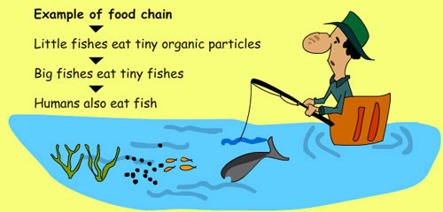

Effects of water pollution:
You will notice in the previous pages that water pollution is very harmful to humans, animals and water life. The effects can be catastrophic, depending on the kind of chemicals, concentrations of the pollutants and where there are polluted. Below, we shall see a summary of the effects of water pollution.
The effects of water pollution are varied and depend on what chemicals are dumped and in which locations.
Many water bodies near urban areas (cities and towns) are highly polluted. This is the result of both garbage dumped by individuals and dangerous chemicals legally or illegally dumped by manufacturing industries, health centers, schools and market places.
 Death of aquatic (water) animals:
Death of aquatic (water) animals:
The main problem caused by water pollution is that it kills life that depends on these water bodies. Dead fish, crabs, birds and sea gulls, dolphins, and many other animals often wind up on beaches, killed by pollutants in their habitat (living environment).
Disruption of food-chains:
Pollution disrupts the natural as well. Pollutants such as lead and cadmium are eaten by tiny animals. Later, these animals are consumed by fish and shellfish, and the food chain continues to be disrupted at all higher levels.

Diseases:
Eventually, humans are affected by this process as well. People can get diseases such as hepatitis by eating seafood that has been poisoned. In many poor nations, there is always outbreak of cholera and diseases as a result of poor drinking water treatment from contaminated waters.
Destruction of ecosystems:
Ecosystems (the interaction of living things in a place, depending on each other for life) can be severely changed or destroyed by water pollution. Many areas are now being affected by careless human pollution, and this pollution is coming back to hurt humans in many ways.